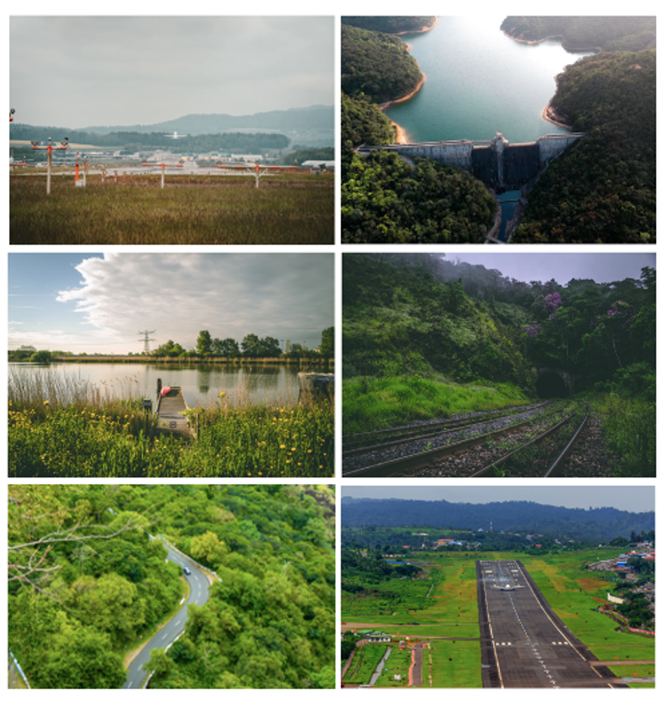
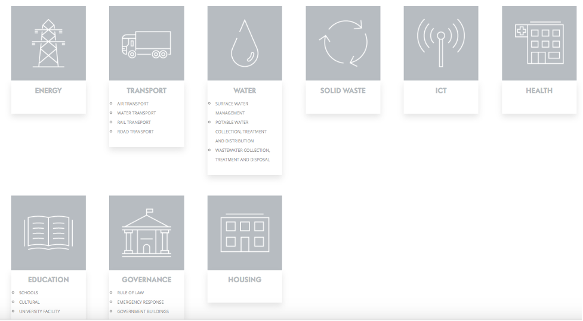

This mini-lecture provides an introduction to nature-based solutions (NbS) in the context of infrastructure development, which will be expanded upon in subsequent mini-lectures. It provides a background as to why and how nature-based solutions can be strategically included in different infrastructure sectors.
Explain the importance of NbS in built infrastructure systems
Differentiate between the types of services that nature can provide to positively impact infrastructure sectors
Recall which tool can be used to support users in identifying how NbS can be included into different infrastructure sectors for the delivery on the SDG targets.
With huge global infrastructure needs and infrastructure investment at a global high (approximately USD2.3 trillion per year, almost USD100 trillion earmarked for investment by 2040), there is huge opportunity to influence the achievement of the global goals and move development towards sustainable, low carbon and resilient outcomes (Global Infrastructure Hub 2017).
Long lifespans, high costs and difficulty of reversal of traditional engineered infrastructure means infrastructure investments lock in patterns of development for decades to come (Thacker et al. 2019). There is therefore a risk that, if the right decisions are not made, infrastructure investment could lock in unsustainable development pathways, high-carbon development, render countries vulnerable to climate impacts and cause increasing social, economic and environmental costs, including the loss and degradation of existing ecosystems (Hall et al. 2016). Integrating natural, ‘green’ infrastructure with traditional engineered ‘grey’ approaches offers an opportunity to support the achievement of global agendas including the Paris Agreement and the United Nations Sustainable Development Goals (SDGs), meet infrastructure and development needs, and simultaneously reverse ecosystem degradation (Seddon et al. 2020).
It is therefore imperative that nature-based solutions (NbS) are integrated into plans and decisions on development, infrastructure, adaptation and investment from the outset, to ensure they are optimised for sustainable, resilient and climate-compatible development. To do so requires informed decision-making on infrastructure planning and investments. This can be challenging, given multiple complexities and future uncertainties associated with demographic trends, social perspectives, new technologies, climate change, economic developments and associated impacts (Sayers, Galloway, and Hall 2012; Haasnoot, Warren, and Kwakkel 2019). The integration of NbS in such decisions adds additional layers of complexity and uncertainty, as shown in Table 15.4.1.
Table 15.4.1: Sources of uncertainty and complexity surrounding NbS (Seddon et al. 2020)
| Uncertainty / complexity | Description |
|---|---|
| Resilience | Climate change is likely to impact ecosystems (altitude, location, extinction), but this is not yet well understood |
| Functional performance | Predicting NbS performance can be imprecise due to NbS’ adaptive nature, condition and uncertainties surrounding long-term potential to maintain service delivery |
| Temporal factors | Many NbS take time to implement and achieve full potential for service delivery and some have seasonal functionality, which can be a factor in suitability for implementation. Delays to benefit accrual mean cost-benefit ratios can vary over time |
| Unforeseen consequences | Interconnectedness of nature means actions in one area can impact elsewhere in the system, but these are not always understood. For example, species type and diversity impact surface, sub-surface and atmospheric processes, including water tables, biodiversity, pest resilience, disease, climate change and NbS performance |
| Governance | Managing NbS under shifting social, economic and political conditions is challenging, particularly where land rights are unclear. |
Without consideration of nature in infrastructure planning and decision-making, there is a risk that development could undermine the provision of existing ecosystem services through the loss, displacement and degradation of nature. Poorly planned infrastructure can impact ecosystems, biodiversity and the natural environment in multiple ways, including through carbon emissions, habitat fragmentation, opening up habitats to new exploitation, biodiversity loss, pollution with solid, liquid and gaseous toxins, exacerbation of soil erosion and slope instability, and nutrient leaching.
NbS offer opportunities to address these problems and progress development agendas including the SDGs, Paris Agreement and Global Decade of Ecosystem Restoration, at the same time as providing multiple benefits to engineered infrastructure systems, through strategic integration with built infrastructure solutions (Seddon et al. 2020; Kapos et al. 2019). NbS can substitute for core infrastructure services, complement built infrastructure in order to reduce built infrastructure requirements, increase the resilience of engineered solutions through protective services, and provide benefits to sector workers whilst simultaneously delivering co-benefits (Browder et al. 2019). Correspondingly, loss of nature can undermine built infrastructure system performance, leading to reduced resilience, higher climate damage, increased costs and undermining progress on the SDGs (Fuldauer et al. 2021).
Figure 15.4.1: Erosion in the watershed of Peligre dam in Haiti has reduced its capacity by half, reducing the hydrogeneration potential and its ability to support irrigation and flood control. Photograph: Unsplash
Figure 15.4.2: Deforested lands can cause landslides or runoff and damage transport networks. Photograph: Unsplash
Figure 15.4.3: Loss of riparian vegetation can cause turbidity issues and sedimentation of water courses and reservoirs. Photograph: Unsplash
Green infrastructure proponents argue that strategic integration of NbS in different infrastructure sectors can enhance positive impacts through the ability of NbS to provide multiple co-benefits, both within and beyond the sector, if implemented with consideration. These include increased flexibility, adaptability, resilience to climate change, carbon sequestration, empowered communities, lower costs, and additional benefits for biodiversity and society (Cohen-Shacham et al. 2016; Ozment, DiFrancesco, and Gartner 2015; Blicharska et al. 2019).
Table 15.4.2: Potential benefits of integrating NbS in built infrastructure sectors (Browder et al. 2019; Kapos et al. 2019)
| Benefit | Description |
|---|---|
| Increased resilience | NbS can naturally regenerate after a hazard and are more adaptable to changing climates. NbS can safeguard grey infrastructure |
| Flexibility for adaptation | NbS can adapt to climate change (e.g. landward shift of mangroves), and address climate impacts. By using pure NbS or hybrid (engineered and natural) approaches, infrastructure systems can recover and adapt to changing conditions better |
| Improved service delivery | For example, restoring upland forests and riparian vegetation can support delivery of water or hydropower energy through stabilising sediments and reducing sedimentation of reservoirs |
| Relative ease of reversibility | Many NbS offer ease of reversibility, particularly those relating to management of ecosystems |
| Climate mitigation | Many NbS offer opportunities for carbon sequestration (e.g. peatlands, wetlands, soils, seagrass, reefs as well as forests) |
| Empowered communities | Well-implemented NbS are based on active engagement with local and indigenous communities |
| Lower cost / cost-effective | Many NbS enable infrastructure services to be provided at a lower cost by reducing grey infrastructure and maintenance requirements. NbS can provide additional economic benefits due to co-benefits |
| Co-benefits | NbS offer many potential economic, social and environmental co-benefits. These include biodiversity conservation, climate mitigation, conservation of traditional knowledge, recreation and tourism, enhanced food security, job creation and inward investment. |
Infrastructure systems depend on various ecosystem services to fulfil their functions (Browder et al. 2019). However, to date, infrastructure assessments and investments have traditionally focused on the built environment, encompassing grey engineered infrastructure and the services that built infrastructure can provide, rather than nature-based infrastructure. As such, traditional infrastructure has played an important role in overcoming development challenges to date and will continue to provide many essential services going forward (Kapos et al. 2019). However, in the face of increasing global challenges, there is growing recognition that grey infrastructure approaches alone can no longer provide the climate resilience and services required (Browder et al. 2019).
Engineered infrastructure systems are falling short of meeting socio-economic needs, with issues of affordability, reliability, resilience, integration and damage. Many engineered infrastructure systems serve to exacerbate environmental issues through displacement of nature, loss of natural carbon sinks and emissions of greenhouse gases.
Moreover, climate change and associated impacts pose a high risk to infrastructure and threaten the infrastructure services and development gains achieved to date. As climate change increases the frequency and intensity of climate impacts (e.g. extreme weather events, sea level rise), existing infrastructure systems are exposed to increasing stress, and countries risk having development progress stalled, and face mounting debt burdens for infrastructure repairs (IPCC 2018).
The dependencies of infrastructure systems on nature have not yet been fully understood or appreciated, and there is a growing realisation that the services provided by nature have been undervalued in development decisions and investments (Fuldauer et al. 2021; Seddon et al. 2020).
Figure 15.4.4: Ecosystems provide services which benefit infrastructure. For example, forests can support hydropower generation. Coastal mangroves and reef systems can dissipate wave energy and protect coastlines and ports from coastal hazards. Improved grazing management can reduce soil erosion and sedimentation of reservoirs. Urban green spaces can reduce the urban heat island effect and improve cognitive functioning and economic productivity. Reed beds, wetlands and salt marshes can filter pollutants, contributing to wastewater treatment. Grasslands can tolerate wildfire, retain moisture and support resilience to heat and drought. Photographs from Unsplash and Browder et al. (2019).
In many circumstances, combining green infrastructure with grey infrastructure, such as dams, levees, reservoirs, treatment systems, and pipes, can provide next generation solutions that enhance system performance and better protect communities (Browder et al. 2019; Kapos et al. 2019). Benefits include:
Core infrastructure services: Natural ecosystems are recognised for their ability to substitute for core infrastructure services, particularly flood management, water purification and storage (Thacker et al. 2019). NbS are increasingly being used in urban areas, for example for Sustainable Urban Drainage Systems
Complementary infrastructure services: NbS can be integrated into infrastructure sectors to support service delivery and reduce requirements for grey solutions. For example, using ponds and reed beds to treat sewage can reduce requirements for engineered wastewater treatment solutions; using wetlands to help recharge groundwater and afforestation to substitute for flood protection can provide risk management services; restoring riparian vegetation can reduce sedimentation of reservoirs, supporting potable water supply
Protective services: NbS offer opportunities to increase the resilience of engineered infrastructure and support the achievement of climate and development outcomes. The vulnerability of different sectors to many of the same climate-related hazards means that NbS for specific hazards may be applicable in multiple sectors
Workforce health: Integrating NbS into buildings and across different infrastructure sectors can enhance mental well-being of sector workers, improve health and reduce work absences, and increase cognitive functioning and productivity
Co-benefits: Well-managed, healthy ecosystems can offer a multitude of additional environmental, social and economic co-benefits, beyond those of traditional ecosystems.

Figure 15.4.5: Integrating nature in infrastructure sectors can provide a variety of benefits, including the provision of protective services (e.g. protection from flooding). NbS can enhance built infrastructure lifespan and reduce maintenance requirements. At the same time, nature provides aesthetic value and benefits including improved air quality, mental health and well-being and carbon sequestration. Photographs from Unsplash
As introduced in mini-lecture 15.2, nature has the potential to influence multiple targets of the SDGs, beyond those specific to ecosystems (SDG goals 14 and 15). Building on this understanding, infrastructure and development decision-makers can strategically incorporate nature into infrastructure projects to maximise impact on the SDGs or progress specific SDGs and targets of interest.
Recent research undertaken by the United Nations Office for Project Services (UNOPS), the United Nations Environment Programme (UNEP) and the University of Oxford has identified the potential for NBS to be included into a broad range of different infrastructure sectors, in order to deliver on the targets of the SDGs. In an online tool called ‘The SustainABLE Module on Nature-based solutions,’ this research shows specific actions, best practice resources and case studies to inform infrastructure practitioners on how to strategically integrate nature to increase the potential influences across the SDG targets.

Figure 15.4.6: The SustainABLE tool covers a broad range of sectors (UNOPS 2019)
This research found that, across all sectors, the strategic integration of NbS for solely sector-related benefits can influence 82% of the SDGs (14) and almost half of SDG targets (78; 46%). Integration of NbS for wider co-benefits beyond the sector has the potential to influence all SDGs and 59% of SDG targets (100).
The next 8 mini-lectures will further explore how NbS can be strategically integrated into different infrastructure sectors in order to deliver benefits within and beyond the sector. Hands-on 10 provides a step-by-step walkthrough of the SustainABLE tool.
NbS underpin the functioning of infrastructure through delivery of ecosystem services. They can be leveraged to provide various benefits to infrastructure, including substituting for or complementing service delivery, reducing built infrastructure or maintenance requirements, increasing resilience of infrastructure systems and enhancing the health and productivity of sector stakeholders. By integrating different ecosystem services provided by nature into built infrastructure sectors, we can achieve positive influences for the sector, and broader social, environmental and economic gains. The SustainABLE tool can help those who want to leverage nature to understand how NbS can be incorporated into different sectors to achieve these benefits.